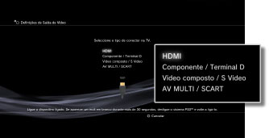
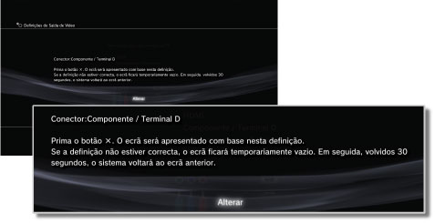
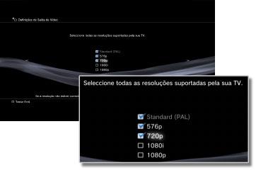
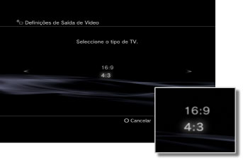
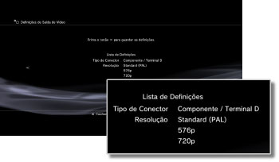

Definições de Saída de Vídeo
Regule as definições de saída de vídeo do sistema. Seleccione as melhores definições para a TV que está a utilizar.
1. |
Verifique a resolução suportada pela sua TV.
A resolução (modo de vídeo) varia consoante o tipo de TV. Para mais detalhes, consulte as instruções fornecidas com a TV.
|
2. |
Seleccione  (Definições) > (Definições) >  (Definições de Apresentação). (Definições de Apresentação).
|
3. |
Seleccione [Definições de Saída de Vídeo].
|
4. |
Seleccione o tipo de conector na TV.
A resolução (modo de vídeo) varia consoante o tipo de conector utilizado.

| Tipo de cabo |
Conector de entrada na TV |
Modos de vídeo suportados *1 |
HDMI Cabo (vendido em separado)
 |
HDMI
 |
NTSC: 1080p / 1080i / 720p / 480p
PAL: 1080p / 1080i / 720p / 576p |
Cabo AV Componente (vendido em separado)

Cabo para terminal D (vendido em separado)
 |
Componente

Terminal D *2
 |
NTSC: 1080p / 1080i / 720p / 480p / 480i
PAL: 1080p / 1080i / 720p / 576p / 576i |
Cabo AV (fornecido)

Cabo S VIDEO (vendido em separado)
 |
Vídeo composto

S Video*3
 |
NTSC: 480i
PAL: 576i |
AV MULTI Cabo (vendido em separado) ［VMC-AVM250］ (produto da Sony Corporation)

Cabo AV (fornecido)
Ficha conectora Euro-AV (fornecida) *4
 |
AV MULTI*5

SCART*6
 |
NTSC: 480p / 480i
PAL: 576p / 576i |
| *1 |
As opções do modo de vídeo variam consoante a região em que o sistema PS3™ foi comprado. Na América do Norte, Ásia e outras regiões NTSC, o modo de vídeo 480i é apresentado como [Standard (NTSC)]. Na Europa e outras regiões PAL, o modo de vídeo 576i é apresentado como [Standard (PAL)]. Para mais detalhes, consulte as instruções fornecidas com o produto.
|
| *2 |
O terminal D é um tipo de conector utilizado principalmente no Japão. As resoluções suportadas pelo D1 a D5 são as seguintes:
D5: 1080p / 720p / 1080i / 480p / 480i
D4: 1080i / 720p / 480p / 480i
D3: 1080i / 480p / 480i
D2: 480p / 480i
D1: 480i
|
| *3 |
O formato S-VIDEO é utilizado principalmente no Japão.
|
| *4 |
A ficha conectora Euro-AV é incluída apenas nos sistemas PS3™ vendidos na Europa.
|
| *5 |
O formato AV MULTI é utilizado principalmente no Japão. Se estiver seleccionada a opção [AV MULTI / SCART], será apresentado o ecrã onde poderá seleccionar o tipo de sinal de saída.
|
| *6 |
O formato SCART é utilizado principalmente na Europa. Se estiver seleccionada a opção [AV MULTI / SCART], será apresentado o ecrã onde poderá seleccionar o tipo de sinal de saída.
|
|
5. |
Defina o tamanho de apresentação da TV 3D.
Defina o sistema para corresponder ao tamanho do ecrã da TV que está a utilizar.
Se a TV que estiver a utilizar não for uma TV 3D ou se não seleccionou [HDMI] no passo 4, este ecrã não será apresentado.
|
6. |
Altere as definições de saída de vídeo.
Altere a resolução para a saída de vídeo. Dependendo do tipo de conector seleccionado no passo 4, este ecrã poderá não ser apresentado.

|
7. |
Defina a resolução.
Seleccione todas as resoluções suportadas pela TV utilizada. O conteúdo vídeo que está a ser reproduzido será automaticamente emitido com a maior resolução possível de entre as resoluções seleccionadas.*
* A resolução do vídeo é seleccionada por ordem de prioridade tal como se segue: 1080p > 1080i > 720p > 480p/576p > Standard (NTSC:480i/PAL:576i).
Se [Vídeo composto / S Video] for seleccionado no passo 4, o ecrã de selecção de resoluções não será apresentado.
Se [HDMI] for seleccionado, pode também seleccionar o ajuste automático da resolução (o dispositivo HDMI tem de estar ligado). Neste caso, o ecrã de selecção de resoluções não será apresentado.

|
8. |
Defina o tipo de TV.
Seleccione o tipo de TV utilizada. Defina quando pretender apenas a saída de resolução SD (NTSC:480p / 480i, PAL: 576p / 576i) como acontece quando [Vídeo composto / S Video] ou [AV MULTI / SCART] é seleccionado no passo 4.

|
9. |
Verifique as suas definições.
Confirme se a imagem apresentada está com a resolução correcta para a TV. Pode regressar ao ecrã anterior e rever as definições premindo o botão  . .

|
10. |
Guarde as definições.
As definições de saída de vídeo são guardadas no sistema PS3™. Pode continuar para definir as definições de saída áudio. Para mais informações sobre a saída áudio, consulte (Definições) >  (Definições de Som) > [Audio Output Settings] neste manual. (Definições de Som) > [Audio Output Settings] neste manual.
|
Notas
- Se as definições da saída de vídeo não corresponderem às necessárias para a TV utilizada, o ecrã pode ficar em branco quando a resolução for alterada. No entanto, passado algum tempo, o ecrã deverá regressar automaticamente à sua resolução original. Se o ecrã ficar em branco por mais do que 30 segundos, desligue o sistema. Em seguida, prima o botão de alimentação na parte da frente do sistema durante, pelo menos, cinco segundos, para voltar a ligar o sistema. As definições de saída de vídeo serão repostas automaticamente para a resolução padrão.
- Se um dispositivo que não é compatível com o padrão HDCP (High-bandwidth Digital Content Protection) estiver ligado ao sistema através de um cabo HDMI, o sistema não será capaz de emitir conteúdo vídeo e/ou áudio.
- Os conteúdos protegidos por direitos de autor de um Blu-ray Disc só podem ser reproduzidos a 1080p quando se utiliza um cabo HDMI ligado a um dispositivo que seja compatível com a norma HDCP.
- Quando o sistema PS3™ (série CECH-3000/4000) é ligado a uma TV através de um cabo para terminal D, um cabo AV componente ou um cabo multi AV (produto da Sony Corporation), a saída analógica de alta definição é limitada para cumprir com a tecnologia de protecção de direitos de autor utilizada pela Blu-ray™ (AACS (Advanced Access Content System)). O software de vídeo BD (BD-ROM) e BD gravadas com conteúdo de vídeo protegido por direitos de autor (como programas emitidos) têm uma saída de 480i.
- Ligue o sistema (série CECH-4200 ou superior) utilizando um cabo HDMI para software de vídeo BD de saída (BD-ROM) e BD gravadas com conteúdo de vídeo protegido por direitos de autor.